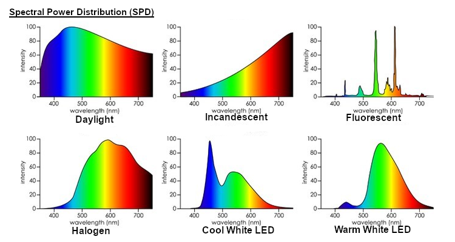

Color
This article is part of Graphics From Scratch, a series of articles on computer graphics. Start from the beginning if you want to know what's going on.
Something so seemingly simple on the surface, but one that hasn't been fully understood yet. It's fascinating, beautiful. Some say it's just electromagnetic radiation. I say no, 'cause I can imagine it with my eyes closed.
Your Eyes Are Lying To You
It's 2 AM. You're standing in an empty street, all quiet. You look at the asphalt reflecting the deep orange color emitted from the street lights. You look at the lights themselves, but they look yellow. Like, really bright yellow. You take out your phone and realize the screen has an unusual blue tint to it. You ignore it and keep using your phone for a couple minutes. You put it back in your pocket and look at what's around. Everything suddenly looks a lot more orange than it was before you used your phone. "Whatever", you say and go back to the house. You turn off the lights and go to bed. It gets real dark. So dark, you start seeing grainy dots. You're barely seeing any colors now. You fall asleep.
It's morning. You get ready for work. You go to your car and realize you haven't brought your briefcase. You go back to the house. There's now a weird green tint all over your vision, and you can hardly see the objects in the house. Back in your car, you look at the asphalt again. It's glowing like crazy, reflecting the sun. You reach your workplace, so you park your car. You look at the fuel level gauge. It too has a strange green tint to it. A few seconds pass by. It now has a purple tint. What is going on?
You open Instagram, and the first reel you see is some goofy optical illusion. You stare at it for 5 seconds. You look back at the fuel gauge. It's all swirly now. You're going crazy. "How does the human vision work? Why is it constantly changing based on what it sees?", you ask yourself, confused.
Color Models Are Just Models
The above are just a few examples of how unpredictable the human vision is. You can't derive formulas for it. You can't simulate it. It's one beast of a system. That is to say, no color model is accurate. With full respect, Oklab, a so-called perceptual color space for image processing, is not a perceptual color space. Nothing is. "Perceptually uniform" color spaces are not perceptually uniform. They do provide useful ways to closely model the vision of a so-called "standard observer" in a generalized manner, but your vision is constantly changing. A greenish white wall might look slightly more red in your left eye than your right eye. Spatial patterns affect colors. Patterns that change over time affect how you perceive colors. The human vision depends on a thousand different factors, and yet, all these perceptual color spaces work with are 3 numbers for RGB.
Again, don't get me wrong. People who design these color spaces certainly know a lot more than me, and they are aware of the fact that their models can never be accurate. With all that, these models are still used to achieve acceptable results in some color-related processes.
Spectral Power Distribution
Although we can't accurately model the human vision in a mathematical or algorithmic way, we can accurately model light itself, because unlike the human vision which is psychophysical, light is a physical phenomenon. To measure light is straightforward. On a basic level, we measure how strong every wavelength is in the electromagnetic spectrum emitted by a light source, or one reflected from a regular object. We call this a spectral power distribution, or SPD in short. We usually only care about the wavelengths we can see, called the visible spectrum.
The colors used in the examples above aren't accurate, but they're close. You'd need laser-like emitters with really narrow bands to produce pure wavelengths, but these color graphs are limited to what the average display device can produce, which is pretty limited in terms of purity.
Discrete SPDs
It would be cool if we could store super detailed SPDs in our programs, but computer memory is limited, so we need to spare some bytes. The usual way to represent an SPD in memory is to use evenly spaced wavelengths. The visible spectrum ranges from 380 nanometers to 750 nanometers, so we could, for example, store the average light power in the [380, 390) nm range, then the average power in [390, 400) nm, and so on up to [740, 750) nm.